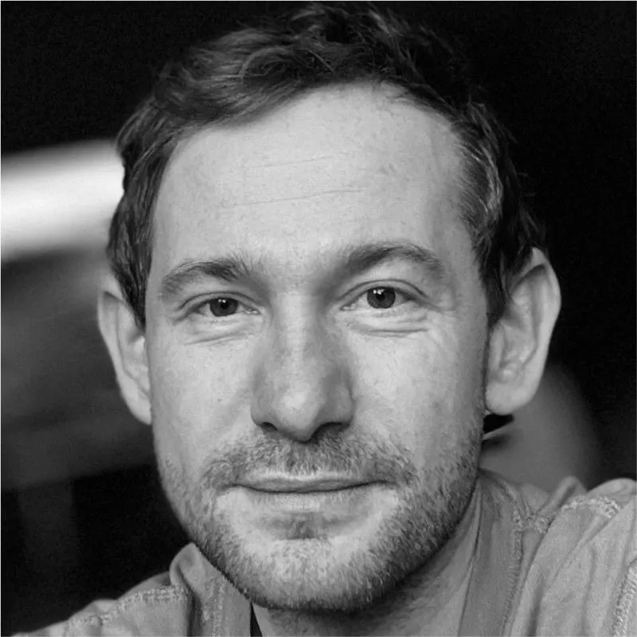

Curriculum Vitæ
Mitia Morovov-Sheiner
Product & Marketing Designer | 10+ Years Experience
Belgrade, Serbia | Remote 💻
📞 +381 67 75-85-488
📧 morovovsheiner@gmail.com
🌐 LinkedIn
💬 English, Russian, Serbian + more
Profile
Product & marketing designer with 10+ years in fintech, SaaS, content tech. Designed product pipelines to unlock €1.5M+ ARR, built platform with $215K+ funding in result, taught 3500+ students at design university. Love to study art, languages, and culture.
Skills & Tools
- Design: Figma, Adobe Suite, UX Writing, Typography
- Systems: Design Systems, Templates, Modular UI
- Research: FullStory, Hotjar, Heap
- Web: HTML/CSS, Webflow, Tilda, Readymag
- Ops: Notion, Jira, ClickUp, Trello
- AI: ChatGPT, Gemini, Firefly
- Presentation: Keynote, PowerPoint, Google Slides
Experience
Smartcat — Senior Product Designer (2025–present)
Strategic Result
NDA
Key Contributions
• NDA
SEOmonitor — Senior Product Designer (2023–2025)
Strategic Result
4× MQL growth and €1.5M+ ARR pipeline unlocked in 1 year
Key Contributions
- Designed AI-powered Content Writer product end-to-end
- Built landing pages, onboarding, and campaign visuals
- Shipped MVP in 3 months, tested weekly with agencies
- Reduced article cost by 30× with scalable UX flow
Brainbox VC — Founding Product Designer (2022–2023)
Strategic Result
$215K+ in startup investments within 6 months post-launch
Key Contributions
- Designed Russia's first regulated crowdinvesting UX
- Delivered platform in <9 months — solo
- Created GTM: landing, brand, pitch decks
- Built scalable onboarding with legal clarity
Funbox — Senior Communication Designer (2020–2022)
Key Contributions
- Designed 100+ branded decks, templates, and guides
- Built landing pages with A/B tests and analytics
- Managed team for visual and infographic output
- Supported reports that shaped growth strategy
Netology — Lecturer & Tutor (2016–Present)
Key Contributions
- Designed programs for non-designers
- Delivered live/recorded lectures
- Supervised final projects
- Taught over 3500+ students
xDesign Studio — Web Designer (2015–2016)
Key Contributions
- Designed websites and landing pages
- Led email content, visuals, testing
- Delivered marketing banners and campaigns
- Coordinated full client content cycles
Recommendations
Mitia was responsible for covering multiple directions at once: product, marketing, and systematisation. From the start, he worked on the hardest parts at SEOmonitor: pricing and product architecture. Team was highly satisfied both by his performance and the end metrics.
 Kostia Konstantinopolskii
Kostia Konstantinopolskii
Head of Design at SEOmonitor
Had the pleasure of working with Mitia at SEOmonitor, and he's one of those rare designers who truly make things easier.
He's highly proactive — share an idea in a meeting, and you might have a wireframe or draft by the end of the day. He works fast and with purpose, always keeping the bigger picture in mind.
Mitia also brings a strong mindset for continuous improvement. He doesn't just deliver what's asked — he iterates, refines, and enhances along the way, ensuring the final result not only looks great but performs better too.

Alen TodorovHead of Marketing at SEOmonitor
Education
- User Interface & Info Visualization, Gorbunov Design School, 2024
- Typography Design, Igor Schtang, 2017
- Ph.D. in Linguistics, State University of Nizhny Novgorod, 2015
- Design Apprenticeship, Gorbunov Design School, 2014
- Language & Literature Teaching, Linguistic University, 2013
Activism
🤟 Sign Language Advocate
- Organized Sign Language Festivals (2016–2017)
- Led Deaf-access teams at events
- Adapted exhibitions for national art center
- TED speaker on sign language